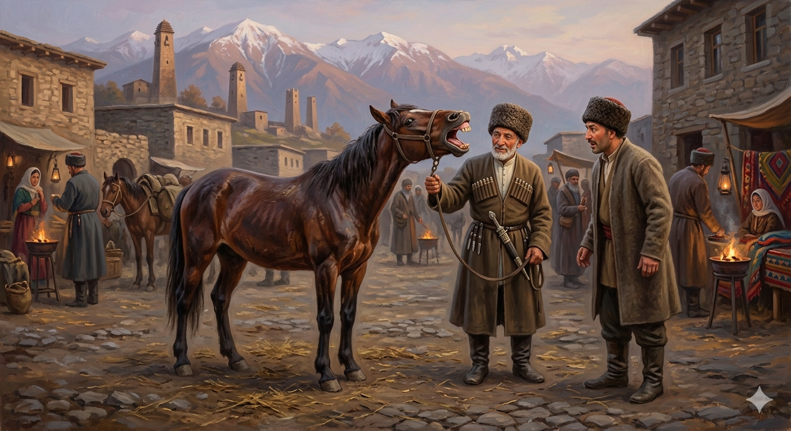

И.А. Дахкильгов. Хьехаме дувцарш - поучительные рассказы-притчи.
И.А. Дахкильгов. Хьехаме дувцарш - поучительные рассказы-притчи. Из ингушского фольклора.

Баге а гӀортаяь лаьттай
Базар тӀа говра йохкаш лаьттав цаӀ. Нах хьатӀаухаш, говрага хьожаш, бат хьайийле, царгашка хьожаш хиннаб. БӀарччача денна нах царгашка хьежаш, сов дика Ӏомаенна хиннай говра. Ди сайранга лестача хана цхьа дезткъе ткъесталагӀа хила мегош къонах тӀавенав говра. Шийна тӀавоагӀаш вол из гаьннара шийна бӀарга ма вейнге а, корта урагӀа а эйбаь, баге а гӀортаяь, еррига царгаш гучаяьхай говро.
РУССКИЙ
Раззявила пасть
На базаре продавали лошадь. В течение всего дня подходили покупатели, осматривали лошадь, открывали ей пасть и присматривались к зубам. Наверное, за день ее уже осмотрело девяносто девять человек. Лошаденка настолько свыклась с тем, что каждый вновь подходящий осматривает ее зубы, что к вечеру, при появлении очередного покупателя, она задрала голову, раззявила пасть и оголила свои зубы.
ENGLISH
She opened her mouth wide
A horse was for sale at the market. All day long, buyers would come up, examine the horse, open its mouth and scrutinise its teeth. By the end of the day, she had probably been examined by ninety-nine people. The little horse had become so used to everyone who approached her checking her teeth that by evening, when the next buyer turned up, she tilted her head back, opened her mouth wide and bared her teeth.
НОХЧИЙН
Бага а гӀаттина лаьттина
Базар тӀехь говра йухкуш лаьттина цхьаъ. Нах схьатӀеоьхуш, говре хьоьжуш, бат схьйоьлле, цергашка хьоьжуш хилла. Дерриге динахь нах цергашка хьоьжуш, сов дика Ӏамайелла хилла говра. Де суьйренга лестачу хенахь цхьа дезткъе ткъессолгӀа хила мегаш къонах тӀевеъна говран. Шена тӀевогӀуш волу иза геннара шена бӀаьрга ма вайне а, корта ирах а айбин, бага а гӀаттина, йерриге цергаш гучуйаьхна говро.
ПОГОВОРКИ
Гирдз даьннача говро шийна лостае йоаца цӀог ремийна лестаяьй. Чесоточная лошадь, не имея хвоста сгонять мух с себя, пыталась гнать их со всего табуна. A mangy horse with no tail to swat flies tried to chase them off the whole herd instead. Гирз даьллачу говро шена ластадан доцу цӀог ремина лестийна.Говра дикал боларах хов, сага дикал сабарах хов. Коня узнаешь по его бегу, человека – по его спокойствию (терпеливости). You know a horse by its gait; you know a man by his composure. Говран дикалла боларах хаьа, стеган дикалла собарх хаьа.Говра йоаца баьри - тхов боаца цӀа. Молодец без коня что дом без крыши. A young man without a horse is like a house without a roof. Говр йоцу бере – тхов боцу цӀа.Говра йоргӀа хилча, тӀаьнашха я оал; йоӀ хоза хилча, кхахьпа я оал; зӀамсаг майра хилча, Ӏовдала ва ол. Если (говорят сплетники) конь идет иноходью, скажут, что у него ноги больные; если девица красива, скажут – кокетка; если парень храбрый, скажут – дурак. If a horse paces smoothly, they'll say its legs are unsound; if a girl is beautiful, they'll call her a coquette; if a young man is brave, they'll call him a fool. Говр йоргӀа хилча, тӀаьнашха йу олу; йоӀ хаза хилча, кхахьпа ду олу; жима стаг майра хилча, Ӏовдал ву олу.Говра чоаболах къоастае, саг сабарах къоаставе. Коня выбирай по галопу, человека – по спокойствию (сдержанности). Choose a horse by its gallop, a man by his composure. Говр чаболах къастайе, стаг собарх къаставе.Говра эцалехьа нувра эца. Прежде чем покупать коня, купи седло. Before you buy a horse, buy a saddle. Говр эцале нуьйра эца.Дас хестаяь говра хьалха яьннаяц. Лошадь, которую расхваливал хозяин, проиграла на скачках. The horse the master praised too much lost the race. Дас хестийна говр хьалха йаьлла йац.Ди шийбар дикагӀа хет, сесаг наьхаяр дикагӀа хет. Свой конь кажется лучше других, чужая жена кажется краше своей. One's own horse always seems the best; another man's wife always seems the prettiest. Дин шеберг диках хета, зуда нехайерг диках хета.Дикача дино шийна шод еттийтац. Хороший конь не дает себя стегать плетью. A good horse never needs to be whipped. Дикачу дино шена шад йеттийтац.Нахага хийхкийтача говран букъ буаб. У коня, которого одалживают, вся спина язвами покрывается. A horse lent out to others comes back with a sore back. Нахега хихкийтича говран букъ бой.Наькъах араваьнначул тӀехьагӀа хьежац говра ланашка. Подковы коня проверяют не тогда, когда уже находятся в пути. One doesn't check a horse's shoes after already setting out on the road. Новкъа араваьллачул тӀаьхьа хьежац говран ленашка.Нувра йолаш волча баьречунга говра хургья; нувра а йоацаш говра ийца вола баьре ший говрах а варгва. Исли всадник имеет седло, у него будет конь; если же он имеет коня, но без седла, то вскоре и коня лишится. A rider with a saddle will always have a horse; but a rider who has only a horse and no saddle will soon lose the horse too. Нуьйр йолуш волчу беречуьнгахь говр хир йу; нуьйр а йоцуш говр эца воьлла бере шен говрах а вер ву.Яха ца тугача говро шод еттийт шийна. Заупрямившаяся лошадь кнута заработала. The stubborn horse earned itself a whipping. Йаха ца туьгучу говро шад йеттийтина шена.Ӏовдала саг – говра; хьаькъала дола саг – цун баьре. Дурак – лошадь, умный – ее наездник. The fool is the horse; the wise man is its rider. Ӏовдал стаг – говр; хьекъал долу стаг – цуьнан бере.